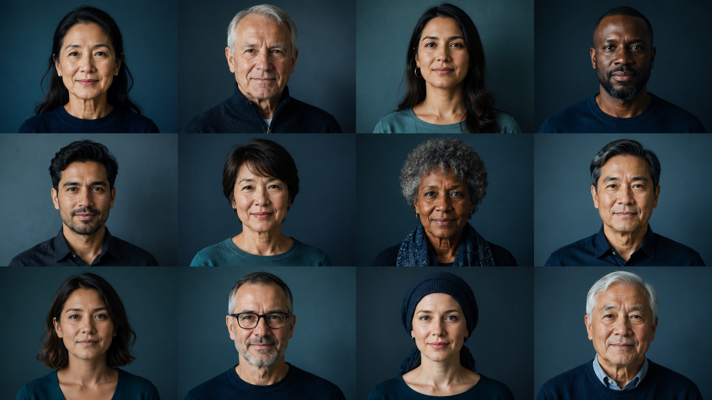

Long-term efficacy & safety of tepotinib in METex14 skipping NSCLC
How to use this activity
After completing this touchINTERACTIVE, you should be better able to:
1. Recognize the role of MET pathway dysregulation and METex14 skipping as an oncogenic driver in NSCLC, and its prognostic and therapeutic significance.
2. Summarize the long-term (≥3-year) efficacy of tepotinib in METex14 skipping NSCLC in VISION - in treatment-naïve and previously treated patients.
3. Evaluate the long-term safety and tolerability profile of tepotinib and its practical management.
4. Assess the consistency of outcomes across clinically relevant subgroups, lines of therapy and in Asian patients.
Table of Contents
NSCLC & the MET driver
NSCLC & the MET driver
The MET pathway is critical for normal physiology; its dysregulation - most notably METex14 skipping, but also MET amplification and fusions - drives proliferation, survival, invasion and metastasis in NSCLC.1
It is a primary oncogenic driver associated with poor prognosis, but one that confers sensitivity to selective MET TKIs.3–5
Introducing tepotinib
Multiple MET TKIs; including tepotinib and capmatinib - are approved1–5 and recommended as targeted options in key international guidelines, including ESMO,6,7 for advanced/metastatic METex14 skipping NSCLC.
Tepotinib is an oral, once-daily, highly selective MET TKI approved in multiple countries.1–3
Introducing tepotinib
The VISION trial
The VISION trial
Study design
A Phase 2, single-arm, open-label study of tepotinib in advanced NSCLC with MET alterations.1 313 patients with METex14 skipping NSCLC (liquid and/or tissue biopsy), now with ≥3-year follow-up (data cut-off 20 May 2024).2
Cohort & dosing
Patients received tepotinib 500 mg (450 mg active moiety), orally once daily, continued until disease progression, intolerable toxicity, or withdrawal of consent.
Endpoints
Primary: ORR by independent review committee (RECIST v1.1).
Secondary: DOR, PFS, OS and safety.
Long-term efficacy
The primary endpoint, sustained after ≥3 years’ follow-up.
Around half of patients achieved an objective response, sustained with long-term follow-up.
Three time-to-event outcomes were sustained after ≥3 years’ follow-up.
Median months. Treatment-naïve n = 164 · previously treated n = 149. ORR is reported for the overall population only.
Long-term safety
The safety profile of tepotinib remained manageable in patients with METex14 skipping NSCLC after ≥3 years of follow-up.1 Most events were handled with dose modification rather than discontinuation.
Long-term safety
Consistency across subgroups

Consistency across subgroups
Summary
After ≥3 years’ follow-up in VISION, five headline findings stood out:
Robust and durable efficacy in treatment-naïve and previously treated patients.
A manageable safety profile with stable patient-reported outcome scores.
Consistent across biopsy method, age, smoking history and brain metastases.
Consistent with prior reports, particularly first-line.
Robust long-term efficacy, particularly first-line.
There are no wrong answers — this simply flags what you might want to revisit.
Capture your thinking. Your words stay editable and feed your CPD record.
Optional — but a specific, concrete change is the most useful thing to record.
That’s the visual abstract complete. Create your CPD record below to keep a note of your reflection — or step back to refine anything.
A personal reflective record, not clinical guidance. Figures relate to the 313 patients with METex14 skipping NSCLC in the Phase 2 VISION trial; full references appear in the activity.
Call to Action
Explore the full activity
In this interactive activity, learn more about the long-term efficacy and safety results of tepotinib in patients with METex14 skipping NSCLC. This will cover:
CPD record
Your CPD record is ready
Copy to clipboard puts the full record on your clipboard to paste into Word or your CPD system. Download keeps a copy as a file you can open and save as a PDF — use Copy if the download is blocked where this is embedded.